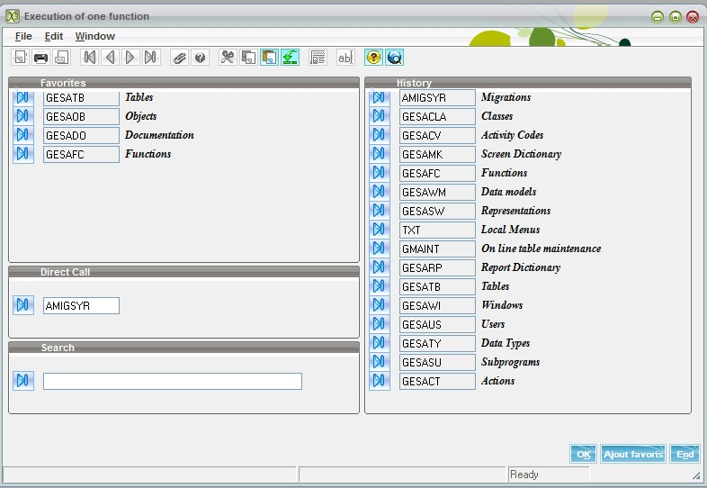
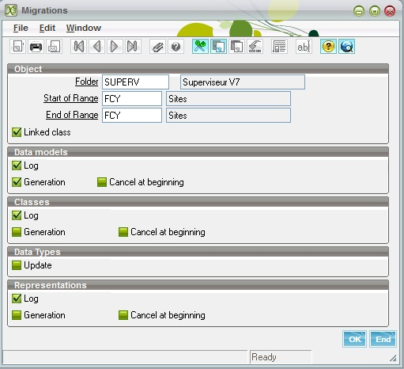
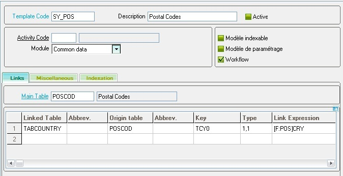
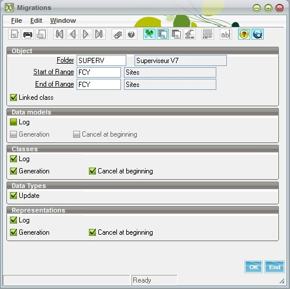

Meta data switching tools
Main description
The purpose of this program is to ease the transition of the meta data used in Sage X3 version 6 (in screen, windows, tables, and objects dictionary) to the new classes and representation dictionary.
Although it will not solve all the transition problems, it can be used as a starting point.
What does this program do?
* It generates classes and representations, and updates data types.
* It is focused on read-only pages support. Generated representations and classes will be limited to read operations.
What does this program not do?
* it will not help to switch the remaining underlying code from a "nested" state to a state where the UI code and the application logic layer are clearly separated.
* it will not solve all the problems associated with the miscellaneous actions linked to the user interface, but it tries to solve some common standard actions such as the management of miscellaneous tables, translatable texts, and so forth.
How does this program work?
It works in two steps:
- The first step produces a data model by analyzing the objects that must be generated as a read-only entity activity. This data model will only be used during the migration process. Once the whole process is completed, you can delete the data models because they will not be used any longer to manage the activities related to the class.
- The second step uses the data model as well as the objects, tables, data types, screens, and their attached windows and generates a class and a representation. Before launching the second step, the development partner can enhance the data model by adding tables that are not detected during this first step or by changing the link types.
A detailed log file is produced and displayed by this operation.
Now let's see more in detail how to launch it, what are the expected parameters, what is exactly done, and what are the tricks and limits of use.
How to launch the operation
This operation can be launched from the Classes menu in the Sage X3 folder. The function code is "AMIGSYR" and can also be launched by using the F7 shortcut and typing the AMIGSYR function code.

The following window is displayed:

The different options and fields that must be filled are located in several sections.
The first section defines the range of the operation:
- The folder in which the operation is executed. By default, the current folder is used.
- A range of object codes. Only the simple objects are processed (In table, Compound, and Browser excluded).
- A check box called Linked Class. If the check box is selected and an object is linked to another table that is associated with another object, the second class will also be generated.
The second section defines how the first step is managed:
- If the Log check box is selected, it will trigger the analysis of the object and generate a log file.
- If the Generation check box is selected, it will trigger the generation of the data models. Data models generation details are stated in the log file if the Log check box is already selected.
- If the Cancel at beginning check box is selected, existing data models that must be generated will first be canceled prior to regenerating them. If the check box is cleared, existing data models will be spared and only missing data models are generated. This check box can only be selected if Generation has been requested.
The third, fourth, and fifth sections define how the second step is managed. Usually, these steps are done together.
In the third section, the parameters are the following:
- The Log check box, if selected, will trigger the analysis of the object and the data model generated in step 1 with all the dependencies. A log file is generated.
- The Generation check-box, if selected, will trigger the generation of the classes. Classes generation details are stated in the log file if the Log check box is already selected.
- The Cancel at beginning check box, if selected, the already existing classes that have to be generated will first be canceled prior to regenerating them. If cleared, the existing classes will be spared and only the missing classes are generated. This check box can only be selected if Generation has been requested.
The fourth section defines only if the data types encountered during analysis have to be updated. This is currently not activated and will be done at a later date. It does not change anything for the class and representation generation.
In the fifth section, the parameters are the following:
- The Log check box, if selected, will trigger the analysis of the object and the data model generated in step 1 with all the dependencies. A log file is generated.
- The Generation check box, if selected, will trigger the generation of the representations. Representation generation details are stated in the log file if the Log check box is already selected.
- The Cancel at beginning check box, if selected, the already existing representations that have to be generated first and be canceled prior to regenerating them. If cleared, the existing representations will be spared and only the missing representations are generated. This check box can only be selected if Generation has been requested.
How to do it step by step
Step One: Data models
It is first recommended:
- To launch the operation only on a unique object, the first object code equals the last object code, and the Linked Classes check box does not need to be selected.
- To launch only the first step, the Log and Generation check boxes should be selected in the Data model block; all other check boxes should remain cleared.
Once this is done, it is recommended to carefully check the log file, and then to use the data model function (function code is GESAWM) and closely examine the generated data model called SY_xxx, where xxx is the object code.
You can see an example of a data model that has been generated. Only the first tab is filled and thus has to be considered.

The important points to be checked are the following:
- Is the main table the correct one for the object to be managed? This should be OK because the determination of the main table is obvious.
-
Are all the relevant tables linked to the main table? This is less obvious. The tables that need to be linked are those that might be updated in normal object operations. You can forget all the tables that are used because they are referenced by a data type.
For instance, let's consider the 'SOH' object, linked to the 'SORDER' table. When updating a sales order, the tables that will be updated are at least 'SODER', 'SORDERP', and 'SORDERQ' and probably some others, but not the table 'BPCUSTOMER' (customers), even if the customer will be on the line because a sales order references a customer code. The adopted algorithm uses several clues to find out what are the relevant tables, but sometimes it does not function well. You might have tables that should not be on line and others that are missing. You have to cancel the lines that should not be there and add the missing ones. -
Are the links relevant (type of link, key values)? Sometimes, it is quite impossible to get the key values for the link or to find out the right type of link. It is very important to correct this information if you want the second step to work correctly.
If any error occurs, and if the result outlines an error in the object description, you might also correct the object dictionary information and relaunch the operation. In this case, do not forget to select the Cancel at beginning check box.
Step Two: Generation of Classes and Representations
This step will usually be done after step one execution and manual adjustments. As both steps can be done simultaneously, you have to be very careful if you do not want to get unexpected results. Avoid having the data model generation check box selected if the generation has already been done, or verify closely that the Cancel at beginning check box on the data models is cleared if manual adjustments have been done. Otherwise, you would lose them.
Class generation and representation generation can be done together. There is no need to launch them separately, although this possibility is available if:
The class and representation generation work based on the following, for each object:
- The main class associated with the object is created first.
- This data model can reference other classes such as child classes. In the data model, a child class is referenced per secondary table.
- The child classes will be generated as persistent if an object is associated with the table that is handled by the object of the main class; otherwise, they will be generated as non persistent.
- The non persistent child classes associated with a main class will be automatically generated every time the main class is generated. It might be generated several times if multiple generations are performed. The generation of persistent child classes can be disabled if the Linked Class check box is cleared. They might have been already generated and modified manually.
- A representation is generated for each generated persistent class and not for the others.
The classes and representations have the same name as the table they manage.
Finally, the classes and the representations are validated.
Example
Let's pretend you decide to run the generation for object 'FCY' (site) for the first step only. The log file will provide the following results:
Data model FCY associated with sites (persistent)
Main table=FACILITY
FACILITY [FCY] +--(0,1)--> COMPANY [CPY3]CPY0=[F:FCY]LEGCPY
FACILITY [FCY] +--(0,N)--> BPADDRESS [BPA]BPA0(0)= (not found)
BPADDRESS [BPA] +--(0,1)--> BID [BID]BID0=[BPA]BPATYP;[BPA]BPANUM;[BPA]BPAADD
BPADDRESS [BPA] +--(0,N)--> CONTACT [CNT]CNT0(2)=[BPA]BPATYP;[BPA]BPANUM
CONTACTCRM [AIN] +--(0,N)--> CONTACT2 [CT2]CNT0(2)=[AIN]CNTTYP;[AIN]CNTNUMThis is not perfect, and in fact, what will be finally set up in the 'SY_FCY' model is the following:
FACILITY [FCY] +--(0,1)--> COMPANY [CPY3]CPY(0)=[FCY]LEGCPY
FACILITY [CPY] +--(0,N)--> BPADDRESS [BPA]BPA0(0)=3;[FCY]FCY
BPADDRESS [BPA] +--(0,1)--> BID [BID]BID2=[BPA]BPATYP;[BPA]BPANUM;[BPA]BPAADD
CONTACT [CNT] +--(0,N)--> CONTACT [CNT]CNT0(2)=3;[FCY]FCYThe first and second lines are correct, but the link expression is missing. The third line is the correct one. The fourth and the fifth lines have to be deleted, but another useful link (CONTACT) is not detected.
Now, launch the process again on the same object (FCY), with all the check boxes for selected classes and representations, exactly as shown on the screen:

The result of the generation is the following:
- The persistent 'FACILITY' class is created.
- The non persistent 'BPADDRESS' class is generated.
- The non persistent 'BID' class is generated.
- The non persistent 'CONTACT' class is generated.
- The 'FACILITY' representation is created.
- The validation is triggered for classes 'FACILITY', 'BPADDRESS', 'BID', and 'CONTACT'.
- As the 'COMPANY' class has been found as a child class, the process continues with the creation of the persistent class 'COMPANY'.
- The non persistent classes 'BPADDRESS', 'BID', and 'CONTACT' are re-generated. This could be avoided if the process was optimized, but this is not the case at the moment. The reason is that these classes are also referenced as child classes for the 'COMPANY' class.
- The COMPANY representation is now created.
- The validation is triggered for classes 'COMPANY', 'BPADDRESS', 'BID', and 'CONTACT'.
Detailed technical description of what the generation does
Data model generation
The linked tables created by the generator are found by analyzing the following:
- The environment setup of the Object (tables to open, considered only if they have a link expression, and tables defined in the import section).
- The screens associated with the main window defined for the object. The tables defined in the Reference table block on the screen definition, the first tab, are also retained.
- The link expressions are computed by analyzing the fields and checking if some fields have a type associated with an object that references the table to link on. If a link cannot be found, the "(not found)" text is present in the log file.
Some index might have to be added if there is no easy link. For example, between functions profiles and access codes, a new index on 'ACCES' table is necessary. It is also necessary to create an index if the variable field of a (0,N) link is not in the last position. For example, to have a link for company between 'BPADDRESS' and 'BID', an additional index 'BID2' referencing 'BIDNUM' in the last position has to be created.
Classes generation
Classes are generated by analyzing the associated data models 'SY_*', the object characteristics, the main window, and the screens in this window.
The main class is always persistent. The child classes are deducted by analyzing the tables in the data model (it can be a direct link or a cascading one). These classes are persistent if an associated object is found.
Groups are created every time fields with a dimension are found. When the fields are adjacent in the dictionary and have the same dimension, a given one or deducted from an activity code value, they will be in the same group. The maximum size of a group can either be given or not defined if a group refers to a child class.
When a property exists to count the number of lines of a group in a table, a property is created and associated with the group in the column Property that is present on the Groups block (first screen of classes dictionary).
A file called [class name]_CSTD is associated with the class.
Methods and Operation tabs are not filled; they are not used for read-only pages support.
Only the standard 'Read' method is set. The other CRUD methods will have to be set up manually if needed.
The properties are created with their attributes. They correspond to the fields of the main table and to the identification of the child classes (linked tables). The associated key and parameters are set according to the data type. Sometimes, the parameter value cannot be retrieved automatically and hence will have to be filled manually.
The mapping tab is filled according to the information found in the data model, but the type of link has to be controlled.
The default Creation/Update/Deletion option on the main table are not activated by default. These options have to be linked to the CRUD operation. When they are checked, the supervisor will generate the code that supports these operations; otherwise, development partners have to write their own code.
On the miscellaneous tab:
- The site and access codes are retrieved from the object characteristics by default, with the first field having the relevant data type - FCY and ACS.
- The company field is filled with the first 'CPY' type field found in the class.
- The company field is filled with "LEG" value if such a field exists in the class.
- No filter is automatically created.
- The linked object field, located at the bottom of this tab, is filled with the object associated with the class.
Representation generation
The representations are generated by analyzing the linked classes, the object associated with them, and all the screens found in the object main window, with the following characteristics:
- The facet needed to support 'read-only pages' are enabled: "$detail", "$query", and "$lookup".
- The behaviors are inherited from the methods found in the data class.
- A file '[class name]_CSTD' is created for the class; while the methods are not created.
- Sections and blocks in the Organization tab are created from tabs and blocks found in the main window associated with the object.
- The Property tab contains the fields found in the screens that are not present in the main or child classes; they are properties that are used only for the user interface. You have to carefully control these properties because most of them will probably be useless for read-only pages support and can be discarded (for example, the technical fields used to display labels). Some properties that will remain in this tab might require additional code to be handled correctly. The property having the BLOB type will require a proper setting of the media type to be managed.
- the Exposed properties tab summarizes all the fields present in the blocks, including fields originating from the classes and the additional properties defined in the Property tab. If it comes from a class, the alias is a unique identifier including a prefix. The alias and the property have the same name if it is a property that has not been defined in a class.
- The parameter definition block, in the bottom of the Exposed properties tab, does not display the parameters when the properties come from a class. This block displays only parameters if links have been added in the data type associated with the field. A link is an action that can only be used at the user interface level.
- The link tab is not filled by the generation program.
Caveats:
- A text management has been completely changed in version 7. Thus, the fields type 'ATT' (and named Z*) have not been and are not transferred in the representation.
- The 'W' fields (fillers) are also useless and thus not transferred in the representation.
- The generation program does not generate metadata that can be immediately used. Tests and manual modifications will have to be done, even if the objects are simple.
FAQ
1: What if, in the detail representation, a unique grid line is displayed?
-- If the grid is generated from a linked table, check if the link type in the mapping is (1,n) or (0,n).
2: My representation is created, but some linked tables are missing because some properties that are only present in the representation should have been filled with data stored in a table.
-- The easiest way is to complete the data model by adding the missing table, and to execute again the generation on the data Class and the Representation with Cancel at beginning flag set.
The following operation will then be performed on the class:
- An additional child class will be created.
- A group having the abbreviation of this table as code will be created.
- A property with the same code, associated with this additional child class and to this group will be created.
- The mapping will be completed for this table.
The following operation will then be performed on the representation:
- The table properties that were specific to the representation will now disappear.
- Exposed properties will be present with the code [main table abbreviation].[linked table abbreviation].property.
3: Out of memory error, or an equivalent, at execution attempt on the generated activities
-- This is probably linked to a setup error. The first point to check is the group definition such as the minimum/maximum number of lines, "bottom page" variable definition, and classes links.
4: The generation of a class modifies another previously generated persistent class in which modification were made (that are lost).
-- Do not select the linked Class check box if you do not want to generate the classes, or do not select the Cancel at beginning check box if you just want to generate the missing classes.